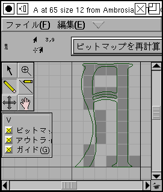

チュートリアル (その 8)
- フォントの作成
- グリフの作成 (アウトラインのトレース) 法
- 他のグリフの呼び出し方
- 次のグリフに関して (矛盾のないパスの向き)
- 統一のとれたセリフとステムの太さ
- メトリックの確認法
- カーニング
- 異体関係にあるグリフ
- アンカーマーク
- 条件つき機能
- フォントのチェック法
- ビットマップ
- フォントの出力方法
- フォントファミリー
- 最後のまとめ
- スクリプト処理のチュートリアル
- 各種の用字系における注意点
フォントの チェック法
フォントに含まれるすべてのグリフの作成を終えた後に、矛盾点のチェックをするべきです。
FontForge には、多くのよくある問題を発見するために設計された エレメント(L)→問題点を発見(O)... コマンドがあります。
単にフォント内のすべてのグリフを選択し、問題点を発見 ダイアログを呼び出すだけです。
とはいえ、全ての実用上の不都合が問題点として報告されるわけでもなければ、FontForge が予期していなかったフォントのデザイン的要素が報告されただけかもしれないことにご注意ください。
このダイアログは以下のような問題点を探すことができます。
- 基準値のどれかに非常に近いが正確には一致しない幅をもつステム
- 基準値のどれかに非常に近いが正確には一致しない高さに置かれた点
- 水平または垂直にほとんど一致するがわずかにずれているパス
- 通常ありえない位置に置かれた制御点
- ヒント位置にほとんど一致するがわずかにずれている点
- …
個人的経験では、いちどきには同種の問題点だけをチェックするのが最善です。 そうしないと種類の異なる問題点をあれこれ調べることになって気が散るのです。
ビットマップ
この段階で、PostScript フォントに加えてビットマップも欲しくなるかも知れません (これは必須ではありません)。
エレメント(L)→使用するビットマップ(A)... を呼び出し、ビットマップを組み込みたいサイズを選択します (X と MS Windows ではピクセル数がポイントサイズと正確に一致しない場合があることにご注意ください)。
それからビットマップエディタ (ウィンドウ(W)→ビットマップウィンドウを開く(B) でビットマップを修整するか、ビットマップフォントを書き出してから誰か他の人のビットマップエディタを使用して修整することができます。

フォントの出力方法
作成したファイルを保存しても、(私の知る限り) FontForge だけが理解できるフォーマットで保存されるだけです。 フォントを使いたい時にはこれは役立たないでしょう。
 作成したフォントを標準的フォントフォーマットのどれかに変換したい場合は、
作成したフォントを標準的フォントフォーマットのどれかに変換したい場合は、保存(S) ではなくて ファイル(F)→フォントを出力(G)... を使用しなければなりません。
FontForge が表示するのはフォントフォーマットの膨大な羅列のように見えますが、実際には数種類の基本的なフォントフォーマット: PostScript Type1, TrueType, OpenType の変種があるだけです (CJK フォントでは、CID フォントもあります)。
ビットマップのフォーマットも選べます。
FontForge は BDF (X で使います), Mac NFNT (Mac で使います), Windows FNT (Windows 2.0 で使うと思います) および TrueType (か OpenType) のラッパの中への組み込みを選べます。
フォントファミリー
フォントを生成した後、おそらく一連の類似したフォントを生成する必要が生じるでしょう。ラテン、ギリシャおよびキリル文字のフォントではイタリック (またはオブリーク), ボールド、コンデンスト、エキスパンデドの各スタイルは非常に一般的です。
同じファミリーに属する異なるスタイルのフォントは同じファミリー名を共有している必要があります (エレメント(L)→フォント情報(F)...→[名前] で設定します)。
フォント名はファミリー名の後ろに 1 個以上のスタイル名を、多くの場合はハイフンを挟んで付け加えたものです。
ですからフォントファミリー“Helvetica”に属するフォントは全て“Helvetica”というファミリー名が設定されていなければなりません。
通常の (plain) スタイルは単に“Helvetica”または“Helvetica-Regular”となり、ボールドスタイルは“Helvetica-Bold”、オブリーク (Helvetica には真のイタリックはありません) は“Helvetica-Oblique”という具合に命名されることになります。
FontForge にはコマンド (現在はまだよく動きませんが、そのうち改良するつもりです) エレメント(L)→Meta Font... があり、これはボールド (コンデンスト、エキスパンデド等) のスタイルを通常のフォントから作成するのを助けるように設計されています。
エレメント(L)→変形(T)→変形(T)...→傾き コマンドは通常のフォントをオブリークのものに変換します。
真のイタリックの作成は一般的にはもうすこし複雑で、“a”の形が“a”へと劇的に変わったり“f”にディセンダがついて“f”となったり,“ilm”のセリフが“ilm”のように丸められたりし、通常は他にも微妙な違いが生じます。
また、フォントを傾けた後は エレメント(L)→極大点の追加(X) を行うべきでしょう。
あるフォントの“Bold" と“Plain”の両スタイルが既に揃っているならば (また、各グリフが同じ順番で同じ個数の点を含むならば)、
エレメント(L)→フォントの補間(L)... コマンドを使って“DemiBold”スタイルを生成することができます。
TrueType フォント (と Windows) はステムの太さに関する非常に細かいグラデーションをサポートしています (Mac は Plain と Bold の 2 種類しか理解しません)。
エレメント(L)→フォント情報(F)...→[OS/2] を選ぶと、0 から 999 までの任意の値を太さとして設定することができます (通常フォントは一般的に 400 から 500 の間で、Bold は 700 くらいです)。
TrueType は、幅の値も広範囲にサポートしています (Mac では condensed, plain と expanded しかサポートされてないのですが)。
 Windows 機では、名前が正しければ、システムはフォントがどのファミリーに属するかを導き出すすることができます。
しかし Mac では現状は (これはもう過去の話かもしれません。現状は変化しつつあり新しい拡張について筆者はまだ理解していません) より複雑です。
Mac は限られた範囲のスタイル (plain, italic, bold, outline, condensed, expanded とこれらの組み合わせ) のみをサポートし、これから外れる全ての物は別個のファミリーに分けられてしまいます。
そのため、あるファミリーに属するさまざまなフォントへのポインタを保持する特別なテーブル (FOND といいます) を構築する必要があります。
あるファミリーに含めたいすべてのフォントを開いてあれば (そしてそれらに正しい名前がついていれば) 通常フォントから
Windows 機では、名前が正しければ、システムはフォントがどのファミリーに属するかを導き出すすることができます。
しかし Mac では現状は (これはもう過去の話かもしれません。現状は変化しつつあり新しい拡張について筆者はまだ理解していません) より複雑です。
Mac は限られた範囲のスタイル (plain, italic, bold, outline, condensed, expanded とこれらの組み合わせ) のみをサポートし、これから外れる全ての物は別個のファミリーに分けられてしまいます。
そのため、あるファミリーに属するさまざまなフォントへのポインタを保持する特別なテーブル (FOND といいます) を構築する必要があります。
あるファミリーに含めたいすべてのフォントを開いてあれば (そしてそれらに正しい名前がついていれば) 通常フォントから ファイル(F)→Macファミリーを出力(F)... を選択することができます。
これにより、現在のフォントと同じファミリーに属すると FontForge が認識した全てのフォントを列挙し、ファミリーに属する全てのフォントファイルと一緒に FOND 構造体を書き出せるようにします (場合によっては全てのフォントは同じファイルに含まれ、場合によっては個別のファイルに書き出されます。これは選んだフォーマットによります)。
最後のまとめ
これで新しいフォントが完成しました。 しかしディスクに置いておくだけでは役に立ちません。マシンにインストールする必要があります。 フォントをシステムの Fonts フォルダにドラッグするだけで簡単にインストールできるシステムもありますが、システムによっては関連する多くの作業を必要とする物もあります。 フォントのインストールに関する FAQ を参照してください。
FontForge のスクリプト処理の仕組みに関するチュートリアルを読むには、ここをクリックしてください。